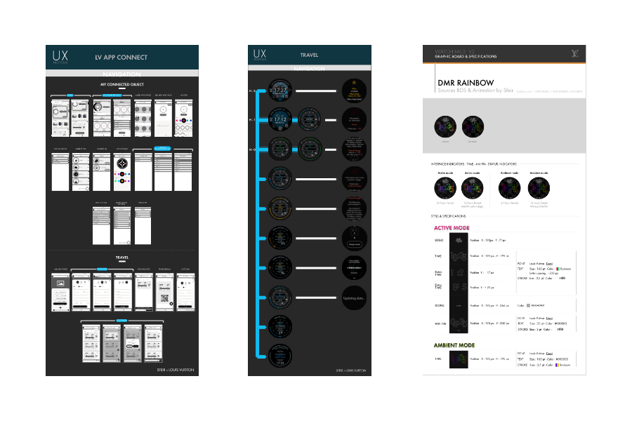

Une Super année en alternance chez [SFEIR] !!!
Avec Matthis NHO, Apprenti UX/UI designer chez SFEIR
Publié le 19 juillet 2020
Pouvez-vous nous parler un peu de vous et de votre parcours ?
Avant d’entrer à l’école supérieure du digitale à Paris (ESD) située dans le 7ème arrondissement, j’ai passé un baccalauréat Economique & Social.
Puis j’ai intégré l’ESD en Septembre 2017 pour son côté polyvalent. On y apprend le développement web, les logiciels de créations de la suite Adobe mais également les stratégies de communication et de marketing dans le domaine du digital.
En 1ère année j’ai fait un stage chez Meteors Digital à Lille en tant que Community manager et en 2ème année j’ai effectué mon stage chez SFEIR. Puis cette année j'ai continué en alternance à sfeir en tant qu'apprenti UI et Ux designer.
Parler nous de votre entreprise ?

SFEIR est une entreprise de services experte en développement web, elle se situe à Paris à Neuilly-sur-Seine mais elle est également présente à Lille, Strasbourg, Luxembourg, Bordeaux & Nantes.
Elle aide leurs clients à construire des applications, des sites et encore plus. Elle est experte dans de nombreux domaine comme en Front-end & en Back-End, le mobile, le cloud, la data, ou encore l’IOT et maintenant en UX / UI design..
Au total il y a 482 Sfeiriens et chaque année plus de 200 candidats viennent chez SFEIR et a rapporté un chiffre d’affaire de 42 millions d’euros en 2018. Il y a plus de 600 développeurs qui sont experts, avec 20% de croissances organique par an et 4000 personnes sont formées par an. De plus, le groupe travaille avec plus de 100 clients actifs dont LOUIS VUITTON avec qui travaille mon équipe et moi.
Ce qui la différencie des autres entreprises c’est le fait que SFEIR fonctionne en Holacratie et leur valeur sont Liberté, Responsabilité, Excellence, Bienveillance et Diversité car oui les sfeiriens vienne du monde entier. Pour se qui l’ignore l’Holacratie est une méthode agile en entreprise visant à casser les prises de décision traditionnelle venant des partons et à la place se sont les acteurs de groupes qui sont responsables du bon fonctionnement de l’entreprise et ces groupe en Holacratie sont appelés des cercles.
Comment avez-vous trouvé votre alternance & qu’est-ce qui vous à décider d’aller chez SFEIR ?
On m’a proposé pour m'a 2ème année à l'ESD, un stage grâce à de la famille qui travaille chez Sfeir. Lors d’une réunion de famille ave Thierry TREPIED j’ai exposer le sujet sur la table comme quoi j’étais en recherche de stage pour m’a 2ème année dans l’UI et L’UX design. Etant un domaine que j’aime beaucoup à l’ESD, je voulais en apprendre plus pour pouvoir me perfectionner et voir comment était un UX/UI designer dans le monde du travail.
L’entreprise cherchait justement ce genre de profil pour étendre leur services. J’ai donc passé un entretien avec Johann MOLIMARD, UX designer chez sfeir et j’ai intégré l’entreprise dans l’équipe qui travaillait pour Louis Vuitton qui s’occupe des objets connectés. Après mon stage j’ai été pris en alternance en continuant à travailler sur le projet Louis Vuitton en continuant d’apprendre de nouvelles méthode de travaille et de nouveaux logiciels.
Que peux-tu nous dire sur ton équipe ?
Avant de vous présenter ce que j’ai fais cette année je vais vous présenter mon équipe d’élite. Nous sommes une dizaine au totale dans le projet Lv ce qui est l’une des plus grande équipe projet dans l’ensemble des ateliers de Sfeir.
D’un côté nous avons l’équipe design avec Bala mon maitre de Stage qui est Product OWNER et Delivery Manager, puis nous Avons Muriel qui est UX et Ui designer et enfin Nicolas qui est aussi UX et UI designer en plus d’être motion designer. Ils ont été mes mentors durant toute mon année à Sfeir et j’ai appris énormément grâce à eux.
Qui dit équpe dsign dit égalment équipe dev car l'un ne vas pas sans l'autres dans nos projets. Nous avons Christopher qui est notre Team Leader et Heng , Julien, Fouad et Charles qui sont développeurs Android mobile.
Comment travailler vous à sfeir ?

Durant un sprint, on commence avec Jira un logiciel comme trullo mais plus pointu pour voir nos tickets à faire durant ce sprint pour chaque équipe que se soit en développant Android mobile ou en back et aussi en design.
Puis tous les jours on s’appelle pour faire un SuM afin de dire nos avancements et nos points de blocages s’il y en a, enfin quand on travail nous faisons de la veille technologique et nous travaillons par la suite principalement sur Illustrator et adobe XD et After Effect pour le motion.
Après avoir finis l’UX ou l’UI, on transmet au développeurs nos dossiers ou assets ou planches sur le drive et sur Zeplin qui est un logiciel hyper important pour des projet s et super utile pour les designer et les développeurs il est primordiale.
Ensuite on rentre dans la phase de Po testing ou on voit les bug ou si il y des POC à faire ou alors notre point de vue change et on dois améliorer nos concepts et enfin à la fin du sprint nous faisons une Review de notre sprint ou l’on dit comment c’est passé ce sprint les bons et les mauvais points et les améliorations qu’il faut faire par la suite.
Quelles ont été vos missions durant ceette année à Sfeir ?

J’ai créé des assets et des polices d’écritures pour Louis Vuitton, j’ai également créé quelques logos pour des applications et j’ai proposé des logos pour des projets internes chez SFEIR ainsi que de la création visuel et des templates pour l’équipe Louis Vuitton.
J’ai également fait un peu de motion design sur des animations. En plus j’ai fait du prototypage pour application mais aussi pour des objets connecté comme les Tambourg HORIZON, les fameuses montre connectés de Louis Vuitton.
Bien évidement il y a aussi toute la partie réflexion sur les parcours utilisateurs à penser et à exposer avec des Wireframes ou encore des planches UI que j’ai fait avec mes collègues qui m’on beaucoup appris et aider.
La plus grosse partie cette année fût sur le sur le projet Louis Vuitton en général. Il à fallut penser à énormément de choses en UX, que ce soit les wireframes, les règles à appliquer et bien plus que se soit pour le système de navigation ou encore des application de la montre comme My Day ou encore Travel qui existe déjà à l’heure actuelle sur les anciennes versions des montres connectées de Louis Vuitton. Il y a aussi toute la partie design en Ui derrière qu’il a fallu travailler par la suite et le motion design pour les watchfaces de la montre. Je ne peux pas les montrer ni en parler davantage pour des raisons de confidentialité car ce n’est pas encore sortie mais un peu de patience vous le verrez bien assez tôt ;)
En ce qui concerne les assets beaucoup sont sortie cette année notamment le crossover entre le jeux ligue of légendaire (LOL) et Louis Vuitton ou encore la récente watch faces en partenariat avec Nigos et Virgil Abloh mais aussi sur des evennnementts de Louis Vuitton durant l’année. (Vous pouvez les voir ci-dessous)

Bien entendu pour les intégrer il a fallu faire des planche d’UX spéciales pour chaque watchfaces afin que les développeurs puissent les intégrer tout comme j’ai du créer des planches UX et UI pour l’application mobile Travel de Louis vuitton sur mobile. (Vous pouvez les voir ci-dessous)
Avez-vous rencontré des difficultés cette année ?
Oui effectivement cette année a été compliquée avec ce qui ce passe dans le monde avec le virus et le confinement. Sinon j’ai eu du mal à mit faire pour les watchfaces au début de mon arrivée car designer sur une montre c’est plus compliqué qui n’y parait les règles ne sont pas les même et le prototype en 3ème vue que je maitrise maintenant était compliqué au début.
Comme par exemple le projet Cuff de Louis Vuitton qui a été finalement été abandonné mais je devais le prototype en 3ème vue c’est-à-dire qu’on fait un prototype en intégrant le mockup à l’intérieur même des écrans prototype.
La pression aussi au début car travailler sur des projets de Louis Vuitton c’est super mais il faut assurer je ne vous fais pas la renommé de la marque ou encore des designer comme Virgil Abloh mais j’avais la pression au début mais j’adore ça cela à permise me surpasser.
Et les bons moments alors ?

Evidement qu’il y a eu des bons moments, par ou commencer, déjà c’est super de pouvoir travailler avec des experts dans leur domaines qui son super cool et super douées et qui arrive à transmettre leur connaissances.
La bienveillance de Sfeir aussi qui m’a accompagner toutes l’année et mon équipe avec qui on à aussi bien délirer comme les tournois de babyfoot de ping pong ou encore les soirées avec louis vuitton ou les escape game ça nous a bien rapprocher ce sont devenus des amis et c’est super de pouvoir travailler dans ces condition de travail on prend du plaisir à apprendre et à travailler dans ces conditions.
Qu’avez-vous appris lors de votre stage ?

Enormément de choses, j’ai appris à utiliser de nouveaux logiciels comme Sketch, Zeplin et abstract qui sont des plateforme mettant en relation le travail des UX/UI designers afin que les développeurs puissent les intégrés avec toutes les caractéristiques techniques des designs créer.
J’ai pu me perfectionner sur les autres logiciels que je connaissais déjà comme Illustrator, Adobe xd, Photoshop, et After Effect.
J’ai appris à être minucieux dans le travail et j'ai pu voir les rouages dans une entreprise comme Sfeir. Ce n'est pas tout, Ce stage m'as paermis de confirmer que l’UX/UI m’intéresse énormément et grâce au stage et aux personnes que j’ai rencontré là-bas je souhaite continuer dans cette voie.
Grâce à cette année avez vous fait des réalisations personnelles ?

Oui vous pouvez les voir sur mon portfolio en détails mais pour vous les résumés j’ai créer une affiche animé sur la saga star wars et du coup je me suis mit a l’animation et j’ai créer un mini court métrage de star dans un style manga fusionnant l’animation pur et le montage vidéo et bien entendu créer les illustrations.
uis j’’ai redesigné Netflix de A à Z sur un nouveau logiciel que je maîtrise très bien maintenant qui est prototype qui es logiciel de design et prototype hyper avancés ou j’ai intégré du code pour pousser l’expériences à son maximum afin de confondre entre un site codé et une maquette désignée et prototypé à l’extrême.
Enfin j’ai créer en 3D le jeu yu gi oh avec Spark AR studios, dans le manga le monstre sort de la carte et bien maintenant avec Facebook ou Instagram si vous scanner le dos de la carte yu gi oh avec votre téléphone un monstre sort de la carte animé en 3D avec le son spécifique de la carte ;)
Que pouvez-vous nous dire de cette année passés chez Sfeir

Ce fut une formidable expérience, les projets était super, j’ai pu monter en compétences dans l’équipe et surmonter les missions difficiles comme la première création de polices d’écriture ou mon premier prototypage de montre connecté car il y avait beaucoup d'écrans à animés mais j’ai réussi à les terminer et à les présenter à l'équipe pour Louis Vuitton et j’en suis très content même si je ne peux pas vous les montrer pour close de confidentialité ;).
Les personnes de Sfeir m'ont super bien accuillit c'est vraiment une grande famille et c'est super de pouvoir travailler avec eux.
J’ai appris énormément de chose que ce soit des logiciels ou des méthodes de travail mais en logiciel j’ai renforcé mes compétences sur certains logiciels de la suite adobe et j’en est appris pas mal pour être le plus polyvalent possible.
«Matthis nous a apportés un oeil nouveau sur les projets, au début il remplissait ces missions mais au fur et mesure il beaucoup progressé et est passé sur des projet de plus en plus sérieux et de plus en complexe. Techniquement il maitrise très vite les outils que se soit ce qu’il connais ou ce qu’on lui montre. Maintenant il dois progresser pour pouvoir vendre des projets seul et structuré ces pensés afin d’être capable de porter un projet et à le présenter.»
Bala
Je remercie donc Sfeir de m’avoir permis de pouvoir être alternant chez eux, je remercieThierry trépied et Bala de m’avoir aider durant l’année et bien entendu toute mon équipe qui est la meilleure et c’est pourquoi j’ai décidé de me spécialiser en master en direction artistique et CDO c’est pourquoi je continue l’aventure avec Sfeir pour encore 2 ans ;)